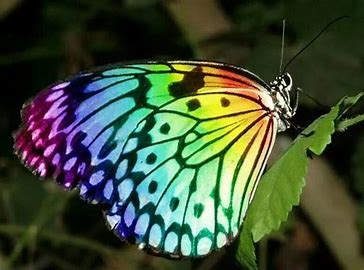
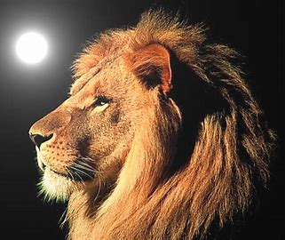
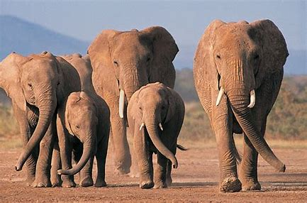
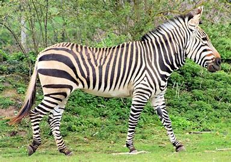
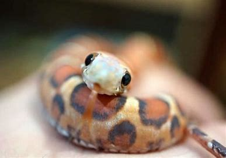
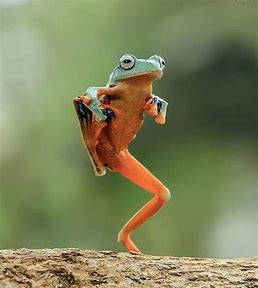
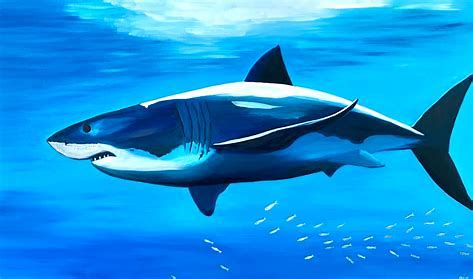

All About Animal
There are many different species of animals
Butterflies

All About Butterflies
- Butterflies are colour insects with that move in a figure 8 motion.
- They taste and smell with thier feet, which help them find suitable plants to lay
thier eggs
- They have compound eyes with 12,000 mini eyes, but they are nearsighted and can only see
10-12 feet away
- hey use tricks to avoid predators, such as camouflage, mimicry, or toxic chemicals
- They live on an all-liquid diet, mostly nectar, but some also drink blood, sweat, or tears
- They have a short lifespan, ranging from a few weeks to a few months, depending on the species
Lion

All About Lions
- Lions are the second largest cats in the world, after tigers, and the only ones with manes and tufts on their tails
- They are known as the "king of beasts" for their strength, courage, and majesty, and have been featured in many cultures and myths.
- They live mostly in Africa, but a small population survives in India, where they are protected in a national park.
- They prefer open habitats, such as grasslands, savannas, and scrublands, where they can hunt large prey, such as zebras, wildebeests, and buffaloes.
- They are social animals, living in groups called prides, which consist of one or more males and several females and their cubs.
- They communicate with each other through roars, growls, snarls, purrs, and body language, and can roar so loud that it can be heard up to 8 km away.
Elephants

All About Elephants
- There are three different species of elephant – the African Savannah elephant, the African Forest elephant and the Asian elephant. Elephants are known for their large ears, tusks made of ivory and their trunks.
- Elephants are the world’s largest land animal! Male African elephants can reach 3m tall and weigh between 4,000 -7,500kg. Asian elephants are slightly smaller, reaching 2.7m tall and weighing 3,000 - 6,000kg.
- Elephants are the largest of all land animals in the world. There are two species, the African and the Asian Elephants. ELEPHANT FACTS AND INFORMATION Facts about Elephants, African Elephants and Asian Elephants. Elephant Anatomy, Habitat, Feeding, Reproduction and Elephant Predators Introduction to Elephants
Zebras

All About Zebras
- Zebras are equids with unique black and white stripes that help them avoid pests and predators
- There are three species of zebras: plains, Grevy's, and mountain, each with different stripe patterns and habitats
- Zebras are constantly on the move, looking for fresh grass and water, and can survive up to five days without drinking
- Zebras are social animals that form herds, or dazzles, of up to 1,000 individuals, led by a dominant stallion
- Zebras are impressive climbers and can navigate rugged terrain, especially the mountain zebras that live in high altitudes
Snakes
All About Snakes

- Most snakes live on land, but there are about 70 species of snakes that live in the Indian and Pacific oceans. Sea snakes and their cousins, kraits, are some of the most venomous snakes that exist, but they pose little threat to humans because they’re shy, gentle, and their fangs are too shortto do much damage.
- Snakes are elongated, limbless, carnivorous reptiles of the suborder Serpentes . Like all other squamates, snakes are ectothermic, amniote vertebrates covered in overlapping scales.
- species of snakes have skulls with several more joints than their lizard ancestors, enabling them to swallow prey much larger than their heads (cranial kinesis).
- Snakes are limbless, carnivorous reptiles that belong to the suborder Serpentes
Frogs

All About Frogs
- Frogs are amazing amphibians that can live on land and water, and have over 5,000 species worldwide, except in Antarctica.
- Some frogs are highly poisonous, like the golden poison dart frog, whose skin toxin can kill 100,000 people with just one gram.
- Other frogs are bizarre, like the Surinam toad, whose eggs are embedded in her back and hatch as tiny toads.
- Frogs can jump over 20 times their own body length, and some can glide or fly with their webbed feet, like the flying frog.
- Frogs have very thin skin that helps them breathe and absorb water, but also makes them vulnerable to pollution and diseases.
- Frogs have unique calls that vary by species and can be heard up to a mile away, and some can even change their sex in certain conditions.
Sharks

All About Sharks
- Like rays and skates, sharks fall into a subclass of fish called elasmobranchii.
- Species in this subclass have skeletons made from cartilage, not bone, and have five to seven gill slits on each side of their heads (most other fish have only one gill slit on each side), which they use to filter oxygen from the water.
- Shark Information, Anatomy, Habitat, Feeding, Reproduction and Types of Sharks. Facts about Great White Sharks, Tiger Sharks, Bull Sharks, Whale Sharks, Bull Shark, Hammerhead Shark, Mako Shark and more.
- Sharks and rays come from one big family that evolved over 400 million years ago.
- Today they come in a variety of shapes and sizes.
Horse
All About Horse
- In prehistoric times the wild horse was probably first hunted for food.
- Research suggests that domestication had taken place by approximately 6,000 years ago
- These are just a few of the over 200 different horse breeds living around the world today.
- Worldwide, horses play a role within human cultures and have done so for millennia. Horses are used for leisure activities, sports, and working purposes.
- Some horses are quite happy to live outside in a big field all day and all night.
I hope you enjoyed this